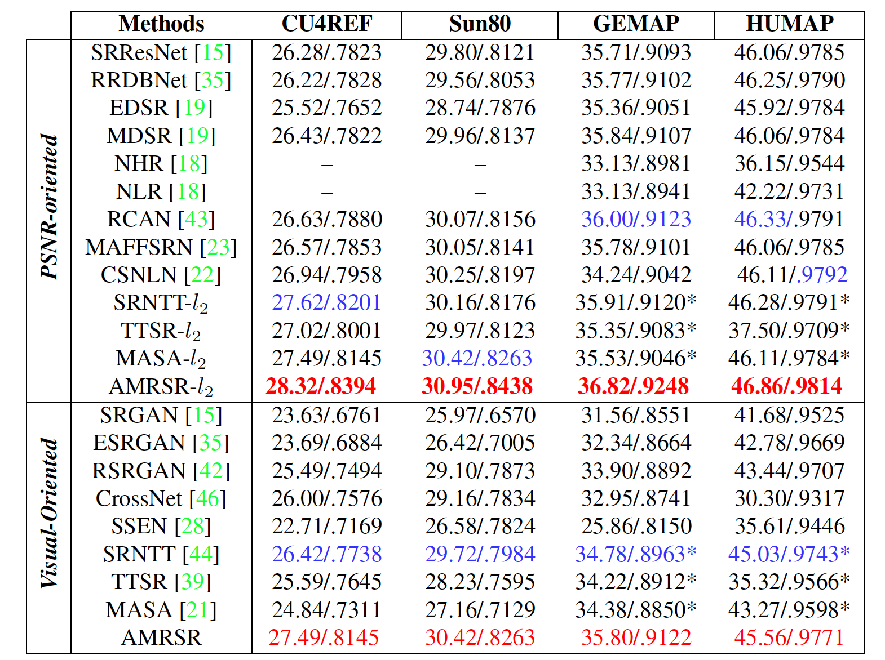
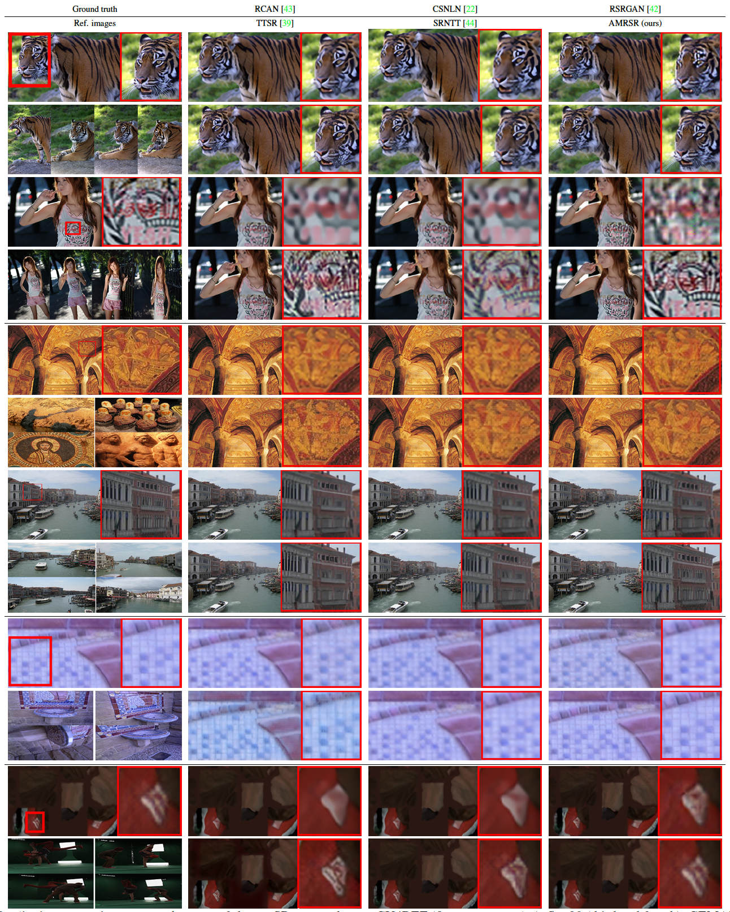
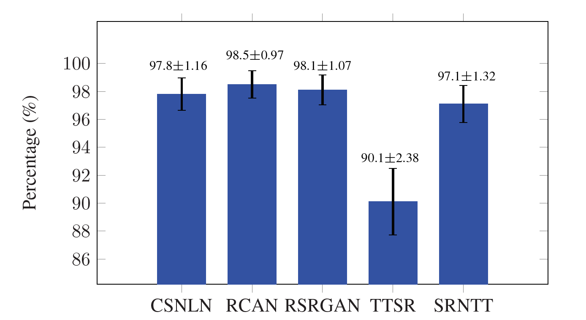
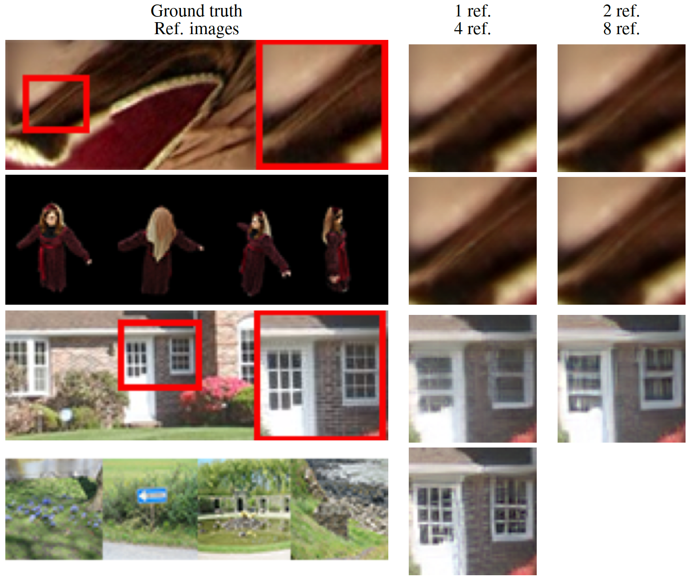
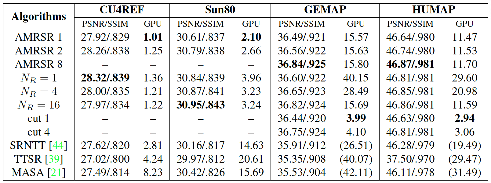

CSNLN
|
 RSRGAN
|
 SRNTT
|
 AMRSR (ours)
|
 References
|
 CSNLN
|
 RSRGAN
|
 SRNTT
|
 AMRSR (ours)
|
 References
|
Abstract
This paper proposes a novel Attention-based Multi-Reference Super-resolution network (AMRSR) that, given a low-resolution image, learns to adaptively transfer the most similar texture from multiple reference images to the super-resolution output whilst maintaining spatial coherence. The use of multiple reference images together with attention-based sampling is demonstrated to achieve significantly improved performance over state-of-the-art reference super-resolution approaches on multiple benchmark datasets. Reference super-resolution approaches have recently been proposed to overcome the ill-posed problem of image super-resolution by providing additional information from a high-resolution reference image. Multi-reference super-resolution extends this approach by providing a more diverse pool of image features to overcome the inherent information deficit whilst maintaining memory efficiency. A novel hierarchical attention-based sampling approach is introduced to learn the similarity between low-resolution image features and multiple reference images based on a perceptual loss. Ablation demonstrates the contribution of both multi-reference and hierarchical attention-based sampling to overall performance. Perceptual and quantitative ground-truth evaluation demonstrates significant improvement in performance even when the reference images deviate significantly from the target image.
AMRSR Approach
Overview of AMRSR

Hierarchical Attention-based Similarity

Paper
Citation
Marco Pesavento, Marco Volino, and Adrian Hilton, "Attention-based Multi-Reference Learning for Image Super-Resolution", IEEE International Conference on Computer Vision (ICCV), 2021.
Bibtex
@inproceedings{,
author = {Marco Pesavento, Marco Volino and Adrian Hilton},
title = {Attention-based Multi-Reference Learning for Image Super-Resolution},
booktitle = {arXiv:},
year = {2021}
}
Results
Quantitative Evaluation

Qualitative Evaluation

User Study

Effect of multiple references

Memory Efficiency

References
- • CSNLN: Y. Mei et al., "Image Super-Resolution with Cross-Scale Non-Local Attention and Exhaustive Self-Exemplars Mining", CVPR2020.
- • RSRGAN: W. Zhang et al., “RankSRGAN: Generative Adversarial Networks with Ranker for Image Super- Resolution”, ICCV, 2019 (oral).
- • SRNTT: Z. Zhang et al., "Image Super-Resolution by Neural Texture Transfer", IEEE Conference on Computer Vision and Pattern Recognition (CVPR), 2019..
- • TTSR: F. Yang et al., “Learning Texture Transformer Network for Image Super-Resolution”, CVPR, 2020.
- • RCAN: Y. Zhang et al., "Image Super-Resolution Using Very Deep Residual Channel Attention Networks", ECCV, 2018.